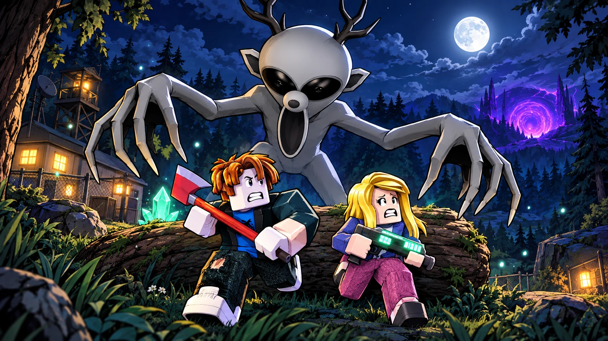
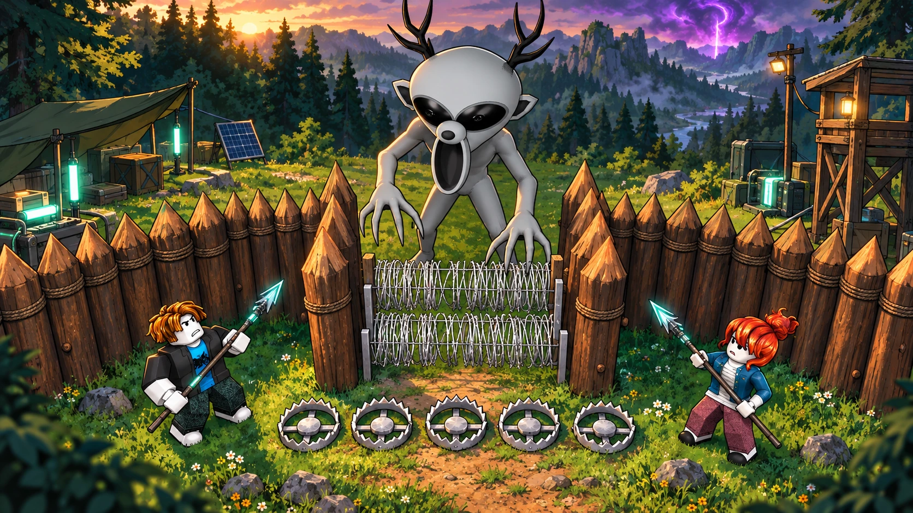

XENO / MASCOT CANDIDATE 01
A familiar fear.
An alien face.
The Gray creature you supplied, carried into Painted-Anime-Inkline. Its antlers, enormous black eyes and long open mouth remain the identity anchors.


THE SUPPLIED ASSET
Identity stays intact.
The original mesh, skin weights and 21 animation clips. Orbit it, select a clip, slow the motion and inspect the hands. This is the actual supplied model, not a reconstruction.
Loading the original Gray model...
THE NEXT PRODUCTION STEP
Make it here.
Keep it local.
The asset studio keeps concept, shape, paint and motion together. Choose the saved style, write a brief and paste references. Approve the concept before reconstruction, then approve animation before export.
Image-to-3D supplies the initial shape. Blender is used downstream for UV paint, rig handling and packaging. It does not replace the approved creature with primitive geometry.
The studio must be running on this computer. This public page only displays saved artwork and models.